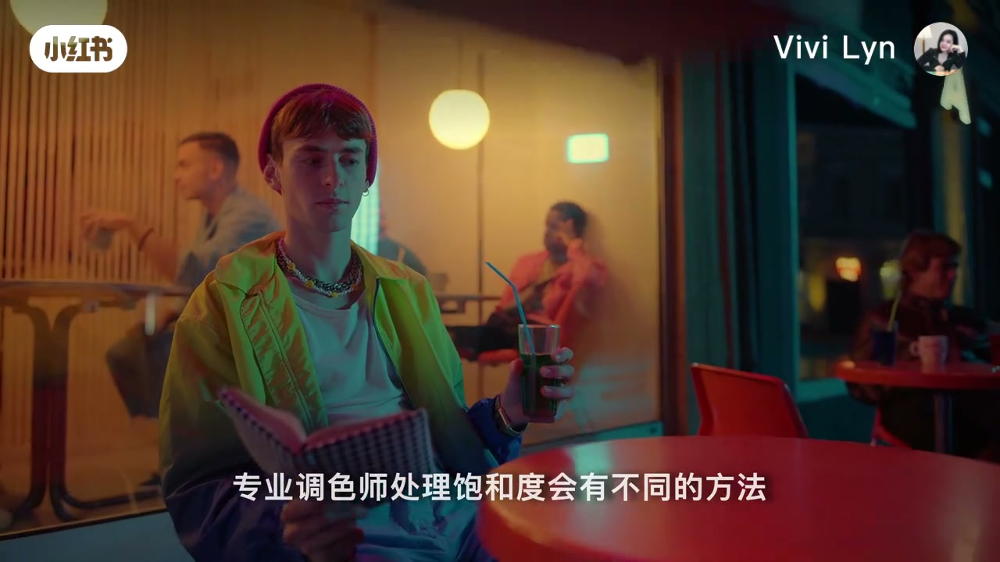
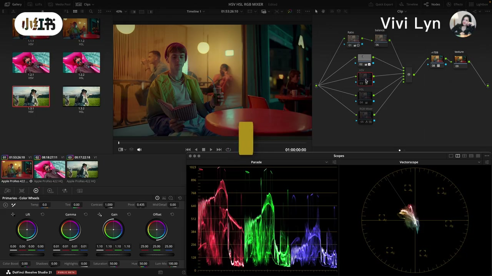
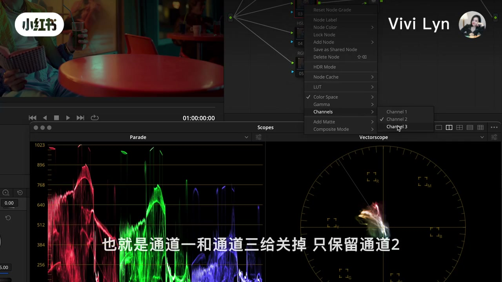
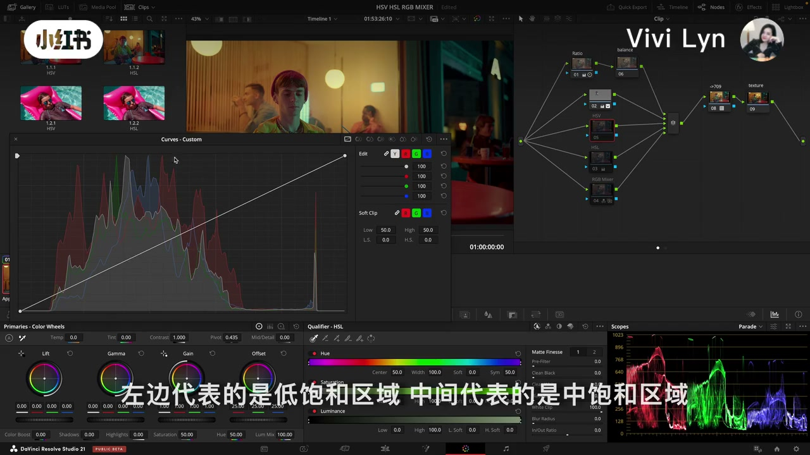
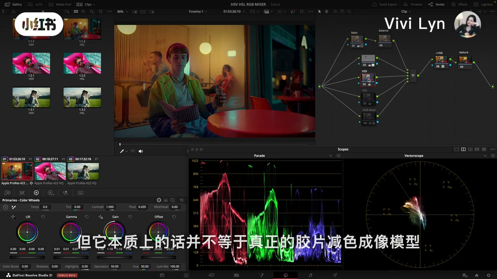
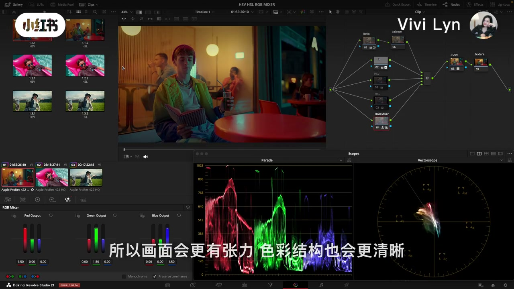

内容要点
这是一期达芬奇调色页操作。开头约 4 秒到 30 秒口播没有被记下来，画面先把三种方法摆上节点树。正文按口播校正后的说法来写，转录区保留识别原文。
知识结构
开场问新手有没有想让画面更鲜艳、却依赖饱和度的情况。空档里画面切到调色页，并行节点和画廊静帧都标着 HSV、HSL、RGB Mixer。
默认三通道是红绿蓝。色彩空间改成 HSV 或 HSL 之后，三通道变成色相、饱和度、明度或亮度。她把通道一和通道三关掉，只留通道二。
曲线左边是低饱和、中间是中饱和、右边是高饱和，她拿来对应一级色轮的 Lift、Gamma、Gain，并说作用区域和算法并不一样。初学她更推荐色轮。对比用的两个节点参数相同。
HSV 加饱和时明度压得更明显，颜色密度上来，有人觉得像胶片的厚重。她马上补了一句：这只是视觉相似，不是胶片减色成像。HSL 更轻，亮度留得更好，颜色没有 HSV 扎实。
RGB 混合器靠输出通道里的混合比例拉开颜色分离和对比，画面更有张力，结构更清楚。红绿蓝加上同样的数值，再到 Key 面板的 Key Out Gain 收力度。用力过度会破坏肤色和灰阶。
她说不同项目需求不同，不存在哪种方法更高级、更专业。她自己会换着选，相对来说 HSV 用得更多。片尾是点赞关注。
廉价感来自「只拉一个饱和度」。HSV 通道二把饱和和明度捆在一起，看起来更厚；HSL 通道二更留亮度；RGB 混合器改的是颜色分离。三条都能加饱和，结果不是同一种饱和。
鲜艳和廉价之间，三种加法先摆上桌
00:00–00:30视频从一张很艳的泳池画面开始。孩子戴着泳镜，躺在粉色浮床上，水是亮蓝色。口播问的是调色新手有没有遇到过：想让画面更鲜艳，但手里依赖的就是饱和度。这句话在 00:00 到 00:04 说完，后面大约二十六秒没有被 Whisper 记成句子。

抽帧把这段补上了。大约 8 秒切到夜店餐桌，人物坐在红桌子前，灯光是暖的，窗外偏青。画面字幕写：专业调色师处理饱和度会有不同的方法。大约 14 秒回到泳池，右下角叠了一块矢量示波器，粉色浮床把示波器往红和品红方向拉出去，字幕是「看哪种会更适合你的素材」。

大约 20 秒进入达芬奇调色页。工程标题就是 HSV、HSL、RGB MIXER。节点树里这三支被放进并行混合，后面还能看见标成 709 和 texture 的节点。左侧画廊静帧成对标着 HSV 和 HSL。大约 26 秒她在节点上点开右键，菜单停在 Channels，下面是 Channel 1、Channel 2、Channel 3。口播从 00:30 才接上：三个通道分别代表的是 RGB，也就是红绿蓝。
开场原话（简体）：「调色新手是否有遇到过想让画面变得更鲜艳，但依赖饱和度。」00:04 到 00:30 的介绍只出现在画面字幕里，转录没有对应分段。
色彩空间一换，通道二才是饱和度
00:30–01:20她先把默认状态说清楚。节点还在 RGB 时，三个通道就是红、绿、蓝。把节点的 Color Space，也就是色彩空间，切到 HSV 或者 HSL，这三个通道代表的分量跟着变：Hue 色相、Saturation 饱和度，以及 Value 或 Lightness，她译成明度和亮度。
接下来先做 HSV。色彩空间已经选成 HSV 之后，到 Channel 这里把 Channel 1 和 Channel 3，也就是通道一和通道三关掉。识别稿这里断成「只保 edereen 道二」，对照 01:04 的画面字幕，应读成「只保留通道二」。她说这一步的意思是：这个节点里调参数，只针对通道二，也就是饱和度。

HSL 她说操作同理。识别稿写成「操作同意」，按前后文是「同理」：色彩空间选 HSL，同样关掉通道一和通道三。视频没有展开 HSV 和 HSL 在数学上差在哪一个轴，只先把「只动饱和度这一路」做成同一种操作。
校正后的原话：「只保留通道二。这就代表我们在这个节点调参数，那只是针对通道二，也就是饱和度来进行调整。」
曲线管低中高，初学她先推色轮
01:20–02:08通道隔离之后，推饱和度的工具有两个：曲线，或者一级调色轮。她把曲线调出来给大家看。左边是低饱和区域，中间是中饱和区域，右边是高饱和区域。她说这三段分别对应一级色轮里的 Lift、Gamma 和 Gain。

对应关系说到这里她就停了。下一句是：这两种工具对画面作用的区域和算法并不一样。这部分她说在自己的调色系统课里有详细讲解，这里不展开。所以这期视频只建立「左低、中中、右高」和三个色轮的对照，没有给曲线形状，也没有给色轮上的具体度数。
演示仍然用曲线。对初学者，她更推荐色轮，理由是控制起来更方便、更精准。为了让对比直观，HSV 和 HSL 两个节点她调整的参数是一样的。先看 HSV 加饱和之后的画面，然后她说会 Grab Still 一下。识别稿听成「Grab Steel」和「截取一下镜针」，按达芬奇里的静帧命令，这里是 Grab Still，截一张静帧，用来并排看 HSV 和 HSL。
HSV 压明度，HSL 把亮度留住
02:08–02:47从视觉结果看，HSV 在提高饱和度的时候，画面会伴随着更明显的明度压缩，以及颜色密度的提升。她转述一种常见感觉：视觉上更接近胶片式的厚重感。紧接着她把这句话的边界说死：本质上并不等于真正的胶片减色成像模型，只是视觉上有一定的相似性。

再切到 HSL。她说 HSL 的颜色会更轻，画面亮度保留得更好一些，但色彩没有 HSV 扎实。识别稿这里是繁体写法，正文按简体写成扎实。两段对比都建立在「两个节点参数一样」这个前提下，她没有报出那个参数是多少，本页也不补数字。
作者原话：「它本质上的话并不等于真正的胶片减色成像模型，那只是视觉上会有一定的相似性而已。」
RGB 混合器拉开分离，Key Out Gain 收力度
02:47–03:18第三种她说是另外一套逻辑。RGB 混合器通过调整 RGB 输出通道里的混合比例，来增强颜色分离和色彩对比。所以画面会更有张力，色彩结构也会更清晰。这和前两种「只开饱和度通道」不是同一件事：前两种是在 HSV 或 HSL 里单独动饱和，混合器是在 RGB 输出上改混合。

操作她讲了两步。先到 RGB 混合器的三个颜色输出通道，红、绿、蓝，给它们增加同样的数值。再到 Key 面板的 Key Out Gain，调整数值，用来控制增加饱和度的力度。画面在大约 03:10 停在这个 Key 面板上。滑块上的具体读数本页不写成步骤，避免把单帧里的瞬时数值当成她给出的标准。
风险她说得很短：用力过度的话，会破坏肤色和灰阶。视频没有演示「过度」之后的肤色偏到哪，也没有给灰阶被破坏的示波器标准，只留下这句提醒。
没有更高级的一种，她自己 HSV 用得更多
03:18–03:41收尾她把等级拿掉。不同的项目会有不同的需求，并不存在哪种方法更高级、更专业的说法。所以还是得根据素材的实际情况，和具体的创作意图，来选择合适的方法。这是作者观点：三条路并列，不排序。
她补了一句个人习惯。在不同素材里她会有不同的选择，但相对来说，HSV 的使用比例要高一些。「相对高一些」没有给出比例，也不能读成 HSV 永远优先。
03:34 之后是结尾口播：如果这期视频有帮助，或者想了解更多专业调色的内容，记得点赞关注。她自报「我是 Vivi」，下期再见。笔记标题和 meta 里的作者名是 Vivi Lyn，口播只说了 Vivi。